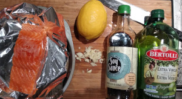
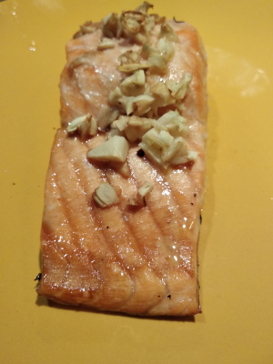

Baked Salmon
 
Ingredients: * Salmon, lemon, olive oil, salt, pepper, rosemary. Optional: soy sauce, garlic
How to make it: * add Aluminum foil and a parchment paper to a pan * Rub the salmon with oil, squeez lemon, salt, pepper, and rosemary * Bake for 18 min on 450 (6 min for half inch of thickness